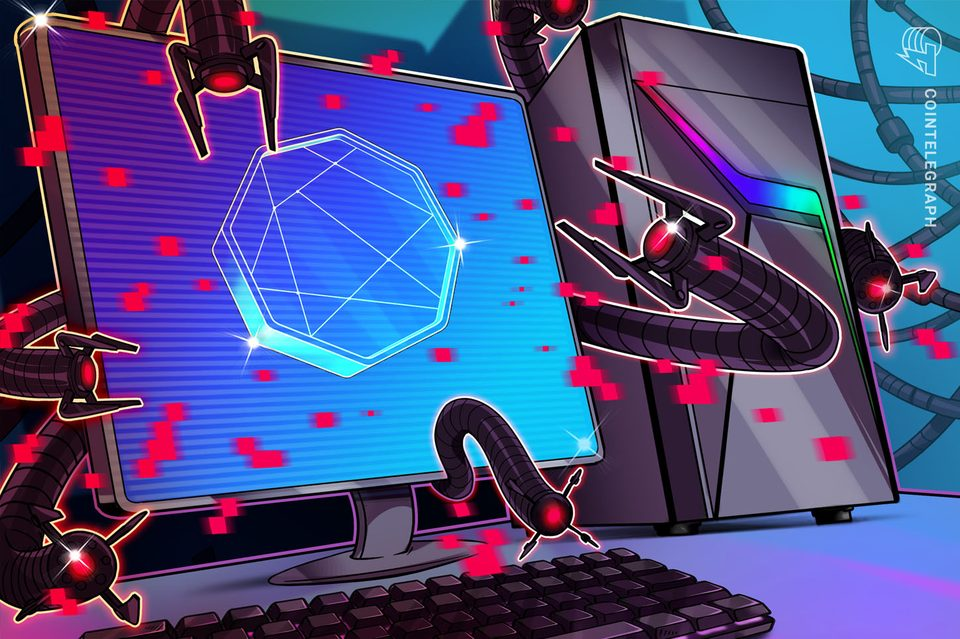
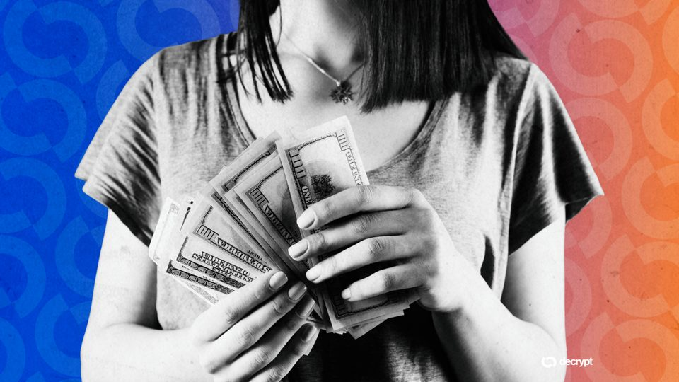
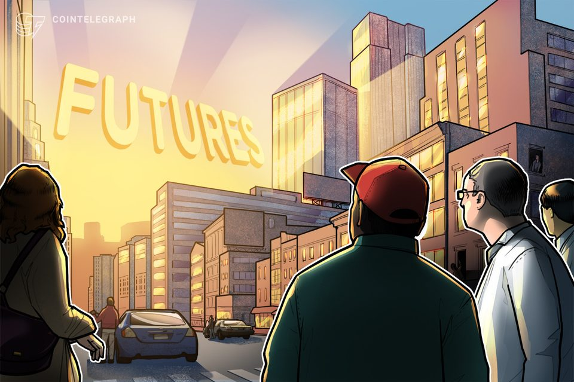
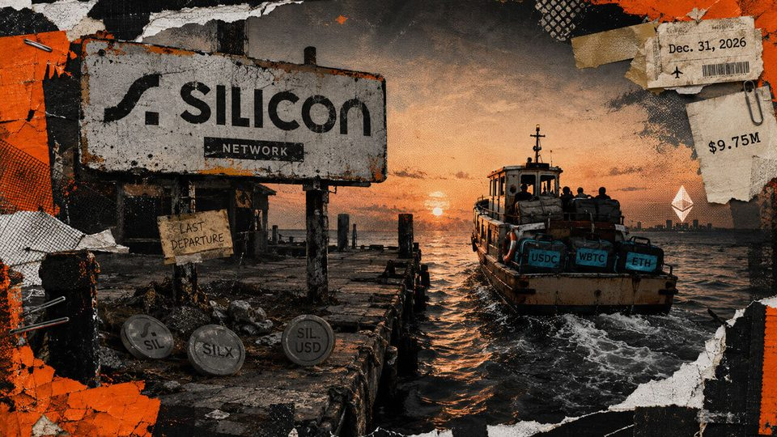
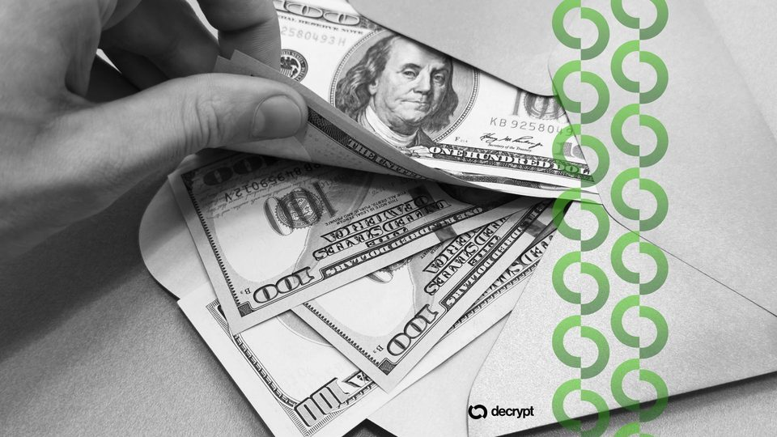
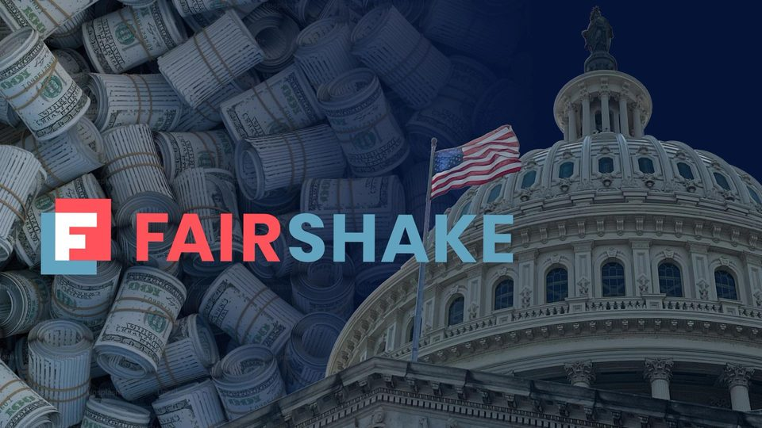

September 3, 2026
Daily headline set with source diversity, cleaned links, and local static rendering.
Coinbase co-founder joins rush for Venezuelan oil assets under new US-backed framework
Primavera is reportedly negotiating for three fields, but no signed agreement or transfer has been announced. The post Coinbase co-founder joins rush for Venezuelan oil assets under new US-backed framework appeared...
Anthropic Admits Security Failures Behind Claude Hacking Incidents
After Claude models accessed real systems during cyber tests, Anthropic tightened its safeguards and warned that flawed training can encourage dangerous behavior.

US officials work with CrowdStrike to fight malware behind crypto theft
Federal authorities and private-sector partners were part of an operation to disrupt malware that redirected about $150,000 in crypto over the last eight years.
DOJ says Hamas crypto seizures reached $560,000 as FBI took over fundraising sites
DOJ says Hamas crypto seizures reached $560,000 as FBI took over fundraising sites
How stablecoins are quietly becoming the Fed's debt buyer of last resort
Dollar tokens can expand private use and Treasury-bill demand without deciding how central banks allocate reserves. The post How stablecoins are quietly becoming the Fed’s debt buyer of last resort appeared first on...

An AI Training Data Startup Just Became Y Combinator's Fastest-Ever Unicorn
Afterquery's valuation jumped more than tenfold in five months, making it Y Combinator's fastest unicorn ever.

Coinbase launches regulated crypto derivatives in Canada
Coinbase is offering eligible Canadian traders perpetual and dated futures with up to 10x leverage as major US trading platforms expand their crypto presence in Canada.

Kraken parent Payward delays IPO to second quarter of 2027 at earliest
Kraken parent Payward delays IPO to second quarter of 2027 at earliest

Nearly $10 million must escape a dying Ethereum L2 network before New Year's Eve or risk becoming unrecoverable
The Ethereum layer 2 stopped deposits and warned that exit routes differ before its network and explorer shut down. The post Nearly $10 million must escape a dying Ethereum L2 network before New Year’s Eve or risk...

FBI Seizes $560K in Crypto Bound for Hamas, Takes Over Fundraising Sites
Agents seized digital assets, domains, and servers allegedly used by Hamas’ military wing to collect donations and recruit supporters.

Here's what happened in crypto today
Need to know what happened in crypto today? Here is the latest news on daily trends and events impacting Bitcoin price, blockchain, DeFi, Web3 and crypto regulation.

Crypto made new friends in U.S. primaries, but focus now shifts to general election
Crypto made new friends in U.S. primaries, but focus now shifts to general election